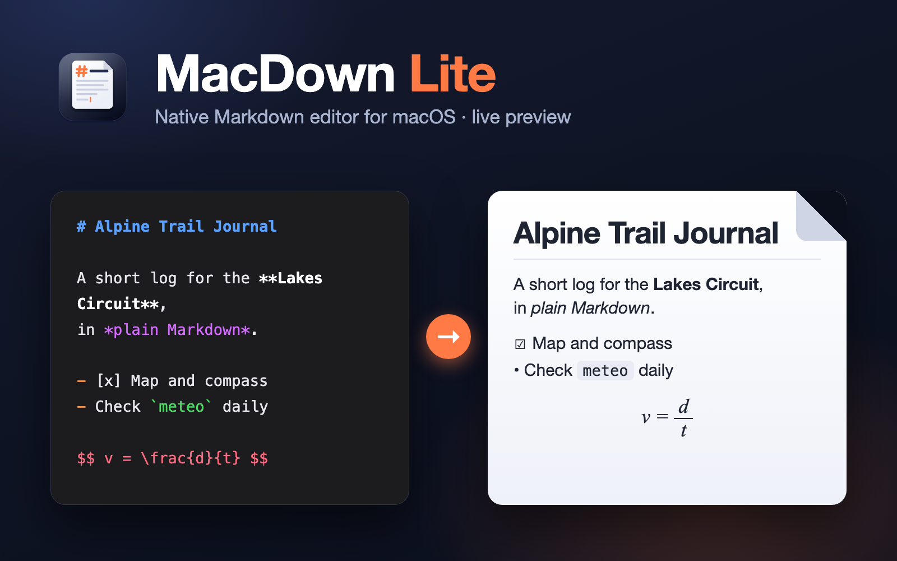
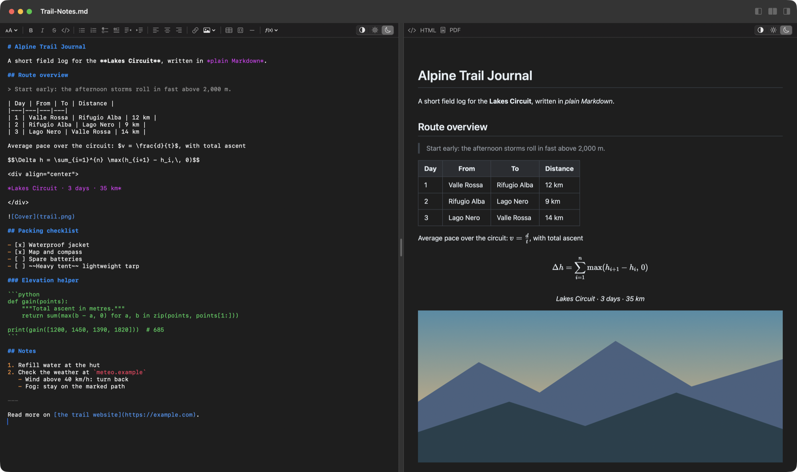

A native macOS Markdown editor with live preview: syntax-highlighted source on the left, GitHub-style rendering on the right, a formatting toolbar, LaTeX formulas and HTML/PDF export.
MacDown Lite is a native Markdown editor for macOS built around one idea: you write raw Markdown on the left and see the formatted result on the right, instantly, with no button to press.
It is a small personal project written in Swift with SwiftUI and AppKit. It works fully offline and ships as a universal app in a DMG of less than 1 MB.
The editor colours headings, emphasis, links, code, quotes and lists, and a formatting bar toggles styles on the selection. The preview renders GitHub-style Markdown, code highlighting and LaTeX formulas.
The two panes stay in sync as you type and as you scroll, and a draggable divider lets you give more room to either side. Switch between editor only, editor and preview, or preview only whenever you want to focus.
Editor and preview each have an automatic, light or dark appearance, remembered between launches.

The editor is a native text view with pattern-based highlighting. The preview is a local web page inside a web view that converts the Markdown, sanitises any embedded HTML, colours code and renders formulas, with every library bundled in the app so nothing is downloaded.
Local images are served through a custom URL scheme handled by the app, which lets macOS grant folder access properly. The DMG is assembled, signed and verified by a script, with no Xcode project needed.
The whole application: document model, window layout, text formatting logic and the export code, packaged as a Swift Package with no Xcode project.
Window, toolbar, formatting bar, theme pickers and the resizable split view, on top of a document-based DocumentGroup app.
The native editor is an NSTextView with regex highlighting; text commands toggle GitHub Flavored Markdown syntax on the selection.
marked, DOMPurify, highlight.js and KaTeX run inside a WKWebView to render, sanitise and colour the preview offline.